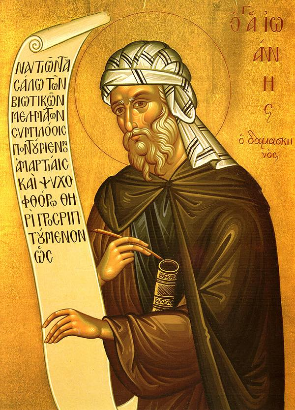

AlKoran
Koran
Św. Jan Damasceński

Istnieje i do dziś panujący i zwodniczy kult izmaelitów, który jest zwiastunem Antychrysta. Wywodzi się od Izmaela – rodzonego dziecka Hagar i Abrahama – dlatego nazywają się oni i hagarenami i izmaelitami. Saracenami zaś nazywają się od słów „Sara” i „ogołocony” (kenos), dlatego że Hagar powiedziała do Anioła: «Sara wyrzuciła mnie ogołoconą» [por. Rdz16,8].
Są oni bałwochwalcami i czczą gwiazdę poranną i Afrodytę, którą nazywają w swoim języku Chabar, co oznacza „Wielka”. Aż do czasów Herakliusza jawnie byli bałwochwalcami. A od tego czasu i dotychczas zjawił się wśród nich pseudoprorok zwany Mamedem [Mahomet]. On przez przypadek zapoznał się ze Starym i Nowym Testamentem i niby też był związany z jakimś ariańskim mnichem [być może mowa o nestoriańskim mnichu Bahirze – Grzegorzu albo Sergiuszu, który miał spotkać Mahometa jako dziecko i stwierdzić w nim znaki prorockie], a potem stworzył własną herezję. Zjednawszy sobie lud przez to, że wydawał się bogobojny, trąbił, iż Pismo z nieba zostało jemu zesłane przez Boga. Naskrobawszy zaś w swojej księdze jakieś rozprawy śmiechu warte, przekazał im je do czczenia.
Mówi, że jedyny Bóg jest twórcą wszystkiego i nie jest ani zrodzony, ani rodzący [Koran, Sura 112]. Mówi, że Chrystus jest Słowem Boga i Jego Duchem, a też stworzeniem i niewolnikiem i że z Maryi – siostry Mojżesza i Aarona – bez nasienia został zrodzony [Sura 19; 4,169]. Albowiem Słowo Boga – mówi – wraz z Duchem wstąpiło w Maryję i zrodziło Jezusa będącego prorokiem i niewolnikiem Boga. Mówi, że nieprawi Żydzi chcieli Go ukrzyżować i schwytawszy Go ukrzyżowali Jego cień. Sam zaś Chrystus nie został ukrzyżowany – twierdzi on – ani nie umarł, Bóg bowiem wziął Go do siebie, do nieba, dlatego, iż Go kochał [Sura 4,156]. I to też mówi, że kiedy Chrystus wstąpił do nieba, Bóg Go zapytał, mówiąc: «Jezusie, Ty rzekłeś, że jesteś Synem Boga i Bogiem samym?»; i mówi, że odpowiedział Chrystus: «Bądź miłosierny dla mnie Panie! Ty wiesz, że nie mówiłem w ten sposób. I nie wyniosłem się ponad bycie tym niewolnikiem Twoim. Lecz występni ludzie napisali, że wyrzekłem takie słowa, i skłamali o mnie, i pobłądzili». I mówi, że odpowiedział mu Bóg: «Wiem, że nie mówiłeś tego słowa» [Sura 5,116n].
I wiele innych bajecznych rzeczy jest w tym piśmie śmiechu wartych, co do którego ów pyszni się, że jemu zostało ono przekazane przez Boga. My zaś mówimy: «A kto jest świadkiem tego, że Bóg przekazał mu pismo; czy kto z proroków przepowiedział, że powstanie taki prorok?». I kiedy będą się kłopotać nad rozwiązaniem, powiemy, że Mojżesz otrzymał Prawo wtedy, gdy Bóg objawił się na górze Synaj przed obliczem całego ludu w obłokach i ogniu, ciemnościach i burzy, oraz że wszyscy prorocy od Mojżesza i po nim przepowiadali o przyjściu Chrystusa, że Bóg Chrystus i Syn Boży przyjdzie wcielony i zostanie ukrzyżowany, i zmartwychwstanie i że będzie sądzić żywych i umarłych. Powiemy więc im: «Dlaczego w ten sposób nie przyszedł prorok wasz, żeby inni o nim świadczyli? I dlaczego Bóg, który dał Prawo Mojżeszowi, wtedy gdy cały naród widział to na dymiącej górze, bez waszej obecności dał owo pismo – o którym mówicie, że je przekazał – żebyście i wy mieli pewność?». I odpowiadają, że Bóg czyni, co chce. Powiedzmy, że to i my wiemy, lecz pytamy, w jaki sposób pismo przyszło do waszego proroka – a oni odpowiadają, że pismo zeszło na niego z góry, kiedy spał. Odnośnie do tego powiemy im żart, że skoro spał, kiedy przyjął pismo, i nie odczuł działania, to na nim spełniło się przysłowie ludowe [„Pleciesz mi sny”]. I znowu zapytamy: «Dlaczego – chociaż wam poleca w piśmie bez świadków nic nie czynić i nie przyjmować – nie poprosiliście go, żeby sam najpierw potwierdził przez świadków, iż jest prorokiem i że od Boga przyszedł, i jakie pisma o nim świadczą?». Wstydząc się, milczą. Do nich słusznie powiemy: «Więc wy nie możecie pojąć żony bez świadków ani sprzedawać, ani nabywać i wy sami nie przyjmujecie bez świadków osła czy bydła. To wy otrzymujecie żonę, majątek, osły, bydło i pozostałe rzeczy przy świadkach. Tylko zaś wiarę i pismo bez świadków macie. Albowiem ten, kto wam to przekazał, nie ma potwierdzenia ani nie jest znany żaden świadek tego, lecz otrzymał to we śnie».
Oni nazywają nas „koleżkami”, dlatego że – jak mówią – dodajemy do Boga kolegę, mówiąc, iż Chrystus jest Synem Boga i Bogiem. W stosunku do tego powiemy, że to Prorocy przekazali i Pisma – wy zaś, jak zapewniacie, przyjmujecie Proroków. Jeżeli więc źle mówimy, że Chrystus jest Synem Boga – to tego nas nauczyli i to nam przekazali. Niektórzy z nich mówią, że my, alegorycznie interpretując Proroków, im to przypisujemy. Inni zaś mówią, że Żydzi przez swą nienawiść zwiedli nas, pisząc jakby w imieniu Proroków, byśmy zginęli.
Kiedy znowu do nich mówimy: «Kiedy mówicie, że Chrystus jest Słowem Bożym i Duchem, to dlaczego wymyślacie nam, że jesteśmy „koleżkami”? Albowiem Słowo i Duch nie istnieją oddzielnie do tego, w kim istnieją. Jeżeli więc istnieje w Bogu jako Jego Słowo, jasne jest, że jest Bogiem. Jeżeli zaś jest poza Bogiem, to według was Bóg jest „niemy” i „bezduszny”. Zatem zapobiegając „skolegowaniu” Boga – zarżnęliście Go. Lepiej by były dla was powiedzieć, że posiada kolegę, niż zarżnąć Go i sprowadzić do kamienia czy drzewa, czy do jakiegoś innego pozbawionego czucia przedmiotu. Takim więc sposobem wy nazywacie nas kłamliwie „koleżkami”, my zaś was nazywamy „rzeźnikami” Boga.
Oczerniają nas jako bałwochwalców, bo czcimy krzyż, do którego mają wstręt. A my powiemy im: «Dlaczego ocieracie się o kamień, znajdujący się w waszej Kaabie [Kaaba znaczy „Dom Boga”. Uważa się, że została zbudowana przez Abrahama z pomocą Izmaela. Zajmuje ona najbardziej poczesne miejsce w Mekce. Opisywany natomiast w tekście kamień najprawdopodobniej stanowi relikt idolatrii Arabów z czasów przedislamskich. Prawdopodobnie jest to meteoryt.], i ściskając, całujecie go?». Niektórzy z was mówią, że na nim Abram współżył z Hagar, inni zaś, iż do niego [Abraham] przywiązał wielbłąda, mając zamiar ofiarować Izaaka [Rdz 22,6]. Odpowiadamy im: «Pismo mówi, że góra była lesista i było drewno do złożenia ofiary, z którego Abraham oddzielił wiązkę i położył Izaaka, i że osłu ze sługami pozostawił. Skąd więc wzięliście te głupstwa? Albowiem tam są gęste lasy i osły nie mogły przejść». Oni się wstydzą, a jednak mówią, że jest to kamień Abrahama. A zatem powiemy: «Niech to będzie kamień Abrahama, jak wy o tym bredzicie. Więc ściskacie go dlatego, że Abraham na nim współżył z żoną, czy dlatego, że wielbłąda do niego przywiązał – i nie wstydzicie się, lecz nas piętnujecie, iż oddajemy hołd krzyżowi Chrystusa, przez który zostały zniszczone siła demonów i diabelskie zwodzenie». To zaś, co oni nazywają kamieniem, jest głową Afrodyty, której oddają pokłon, nazywając ją Chabar. Na tym kamieniu aż do dziś uważnie przyglądającemu się ukaże się zarys rzeźby.
Ten Mamed – jak powiedziałem – ułożył wiele bredni i każdej z nich nadał nazwę, jak np. pismo „Kobieta” [Sura 4], w którym ustanawia prawo jawnego brania czterech żon i jeżeli to byłoby możliwe, tysiąca nałożnic – tyle ile czyjaś ręka mogłaby utrzymać oprócz czterech żon. To zaś, że jedną, jeżeli zechcesz, możesz odpuścić, inną zaś – nabyć, on ustanowił z tej przyczyny, że miał druga zwanego Zejd. Ten miał młodą i piękną żonę, w której się zakochał Mamed. Kiedy więc oni siedzieli, rzekł Mamed: «Jest taka rzeczy, Bóg mi nakazał wziąć twoją żonę». Ten zaś odpowiedział: «Apostołem jesteś, czyń jak Bóg ci powiedział – weź moją żonę». Raczej zaś – jak wyżej powiedzieliśmy – rzekł Mamed do niego: «Bóg nakazał mi, żebyś odprawił twoją żonę». Ten zaś odprawił, a po kilku dniach Mamed powiedział: «Bóg nakazał mi, żebym teraz ją wziął». A następnie biorąc ją i cudzołożąc z nią, wydał takie prawo: «Ten, kto chce, niech odprawi żonę swoją. Jeżeli zaś po odprawieniu inny zwróci się do niej – niech ją poślubi, bo nie można wziąć jej w posiadanie, jeżeli nie zostanie poślubiona przez innego. Jeżeli zaś by brat odprawił – niech z nią ożeni się jego brat, jeżeli on tego chce» [Sura 2,225]. W tym samym piśmie takie dał polecenia: «Uprawiaj ziemię, którą dał tobie Bóg, i upiększaj ją, i czyń to i tamto» [Sura 2,223] – żeby nie wszystko mówić tak wstrętnie, jak tamto prawo.
Znowu jest pismo „Wielbłądzica Boża” [pismo to nie stanowi części Koranu], o której mówi, że była wielbłądzicą Boga i wypiła całą rzekę, i nie mogła przejść między dwiema górami, bo się nie zmieściła. Lud więc – mówi – przebywał w tym miejscu i jednego dnia on pił wodę, a następnego – wielbłądzica. Wypiwszy zaś wodę, ożywiła go, dając mleko zamiast wody. Powstali więc owi mężowie, a że byli źli, zabili wielbłądzicę. Ona zaś miała płód – małą wielbłądzicę, która – jak mówi – kiedy matka została zgładzona, zawołała do Boga, a Ten wziął ją do siebie. W stosunku do tego powiemy: «Skąd ta wielbłądzica?». I odpowiedzą, że od Boga. I powiemy: «Czy była ona pokryta przez innego wielbłąda?». Oni mówią, że nie. Jak więc – pytamy – urodziła? Widzimy bowiem, że wielbłąd wasz bez ojca, bez matki i bez rodowodu. Urodziwszy zaś małą wielbłądzicę, zło ucierpiała, a ten, który ją pokrył, nie pojawia się, a małą wielbłądzica została wzięta do nieba. Prorok więc wasz, z którym jak mówicie – Bóg rozmawiał, czemuż to nie dowiedział się o wielbłądzicy, gdzie ona się pasła i kto poił ją mlekiem? Czy ona sama przypadkiem, spotkawszy złych ludzi, nie została zabita jak jej matka, czy może weszła do raju jako wasz zwiastun i z niej dla was będzie rzeka mleka, o której bredzicie?
Mówicie bowiem, że w raju dla was ciekną trzy rzeki: wody, wina i mleka. Jeżeli zwiastun wasz – wielbłądzica – znajduje się poza rajem, to jasne jest, że wyschła z głodu i pragnienia lub że inni jej mleko wykorzystują. I daremnie tedy prorok wasz się wynosi jako przestający z Bogiem, bo tajemnica wielbłądzicy nie została mu odkryta. Jeżeli zaś ona znajduje się w raju, to znowu pije wodę i z braku wody wychniecie pośród rozkoszy raju. Jeżeli zaś z rzeki rajskiej będziecie chcieli napić się wina bez wody – wypiła bowiem całą wodę wielbłądzica – pijąc niezmieszane wino, rozpalicie się i pod wpływem upicia wpadniecie w obłęd i położycie się spać. Po śnie zaś z ciężką głową i zatruci winem zapomnicie o przyjemnościach raju. Jak więc prorok wasz nie pomyślał, żeby nie przydarzyło się to wam w raju rozkoszy ani nie pomyślał o wielbłądzicy, gdzie ona teraz przebywa? Lecz wy nie zapytaliście go, kiedy opowiadał wam otumaniony snami o trzech rzekach. My zaś wyraźnie oznajmiamy, że podziwiana przez was wielbłądzica pierwsza przed wami weszła do dusz osłów, gdzie i wy będziecie żyć jak bydło. Tam zaś panuje ciemność ostateczna i kara nieskończona, ogień budzący, robak nieśpiący i demony piekielne.
Znowu mówi Mamed w piśmie „Stół zastawiony” o tym, że Chrystus prosił Boga o posiłek i był mu dany. Bóg – mówi – rzekł do niego: «Dałem Ci i tym, co z Tobą, posiłek nieśmiertelny» [Sura 5,114n].
Znowu pismo „Byczek” [Sura 2] opowiada inne bajki śmiechu warte, które z powodu ich wielkiej liczby trzeba opuścić. Mamed ustanowił, aby saraceni z żonami przechodzili obrzezanie i zakazał im czczenia szabatów oraz chrztu. Polecił im jeść pewne rzeczy spośród tych, których jedzenie jest zakazane w prawie [Mojżeszowym], od innych zaś polecił się powstrzymywać, a picia wina zakazał całkowicie.
- Περὶ αἱρέσεων (O herezjach)
Św. Tomasz z Akwinu - Summa contra gentiles
Ci zaś, którzy wprowadzili błędy sekciarskie, postępowali drogą przeciwną, jak to
widać u Mahometa; zwabiał on ludy obietnicami rozkoszy zmysłowych, do których
pragnienia podnieca pożądliwość ciała. Mahomet podawał także przykazania
odpowiednie do obietnic, popuszczając cugli pożądliwości cielesnej, a temu ludzie
zmysłowi łatwy dają posłuch. Jako dowody prawdy zaś podawał tylko takie, które każdy
średnio mądry człowiek może poznać rozumem przyrodzonym. Co więcej, prawdy,
których nauczał, pomieszał z wieloma bajkami i zupełnie błędnymi naukami. Nie ukazał
też żadnych znaków nadprzyrodzonych, które jedynie dają odpowiednie świadectwo
natchnieniu Bożemu, gdyż działanie widzialne, takie jakie może pochodzić tylko od
Boga, wykazuje, że nauczyciel prawdy otrzymuje natchnienie niewidzialne. Powiedział
zaś, że jest posłany z mocą zbrojną, a takich znaków nie brak także rozbójnikom i
tyranom. Poza tym ci, którzy uwierzyli z początku Mahometowi, nie byli jakimiś
uczonymi, wykształconymi w sprawach boskich i ludzkich, lecz byli to ludzie dzicy, prze-
bywający na pustyniach i nieznający żadnej nauki boskiej. Wykorzystując tłum takich
ludzi i przemoc zbrojną, zmusił innych do poddania się jego prawu. Żadne też proroctwa
Boże poprzedzających go proroków nie dają mu świadectwa — przeciwnie, on raczej
spaczył prawie wszystkie nauki Starego i Nowego Testamentu opowiadaniem pełnym
bajek, co widzi każdy, kto bada jego prawo. Dlatego też chytrze nie zalecił swym
wyznawcom czytania ksiąg Starego i Nowego Testamentu, by mu nie wykazali fałszu.
I tak widać, że ci, którzy dają wiarę jego słowom, wierzą lekkomyślnie.
(Tomasz krytykuje braki w
motiva credibilitatis.)
Linki
answering-islam.org
Debunking Islam - InspiringPhilosophy